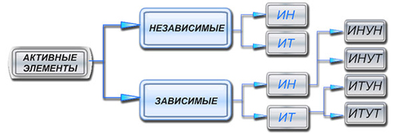

1.3. Активные элементы цепей и их характеристики
Активные элементы (АЭ) цепей являются источниками электрической энергии (аккумуляторы, генераторы и др.). На рис. 1.9 приведена классификация источников энергии. КЛАССИФИКАЦИЯ АКТИВНЫХ ЭЛЕМЕНТОВ  Рис. 1.9 Различают: источники напряжения (ИН) и источники тока (ИТ), которые подразделяют на независимые - с постоянными параметрами (ИН: ЭДС Е = const и внутреннее электрическое сопротивление Rвт = const; ИТ: ток J = const и внутренняя электрическая проводимость Gвт = const) и зависимые, параметры которых управляются напряжением uy (ИНУН и ИТУН) или током iy (ИНУТ или ИТУТ), т. е. Е = f (uy или iy ) и J = f (uy или iy). |